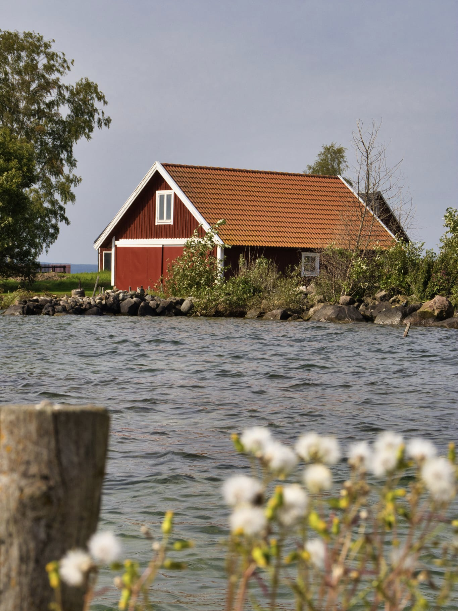
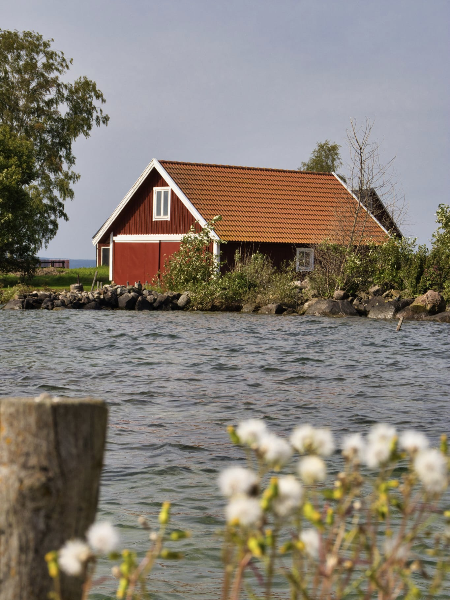
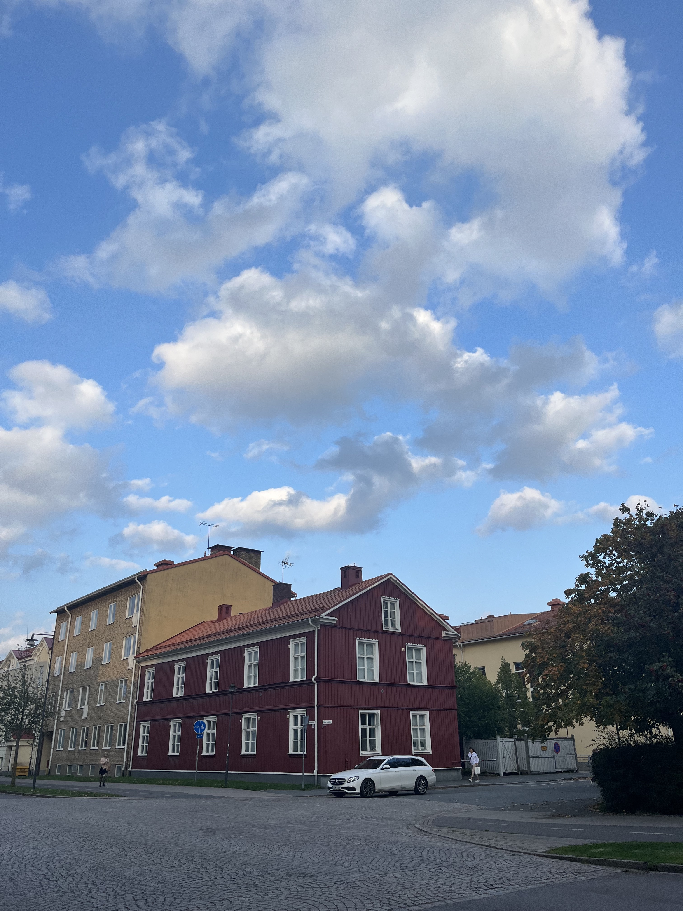
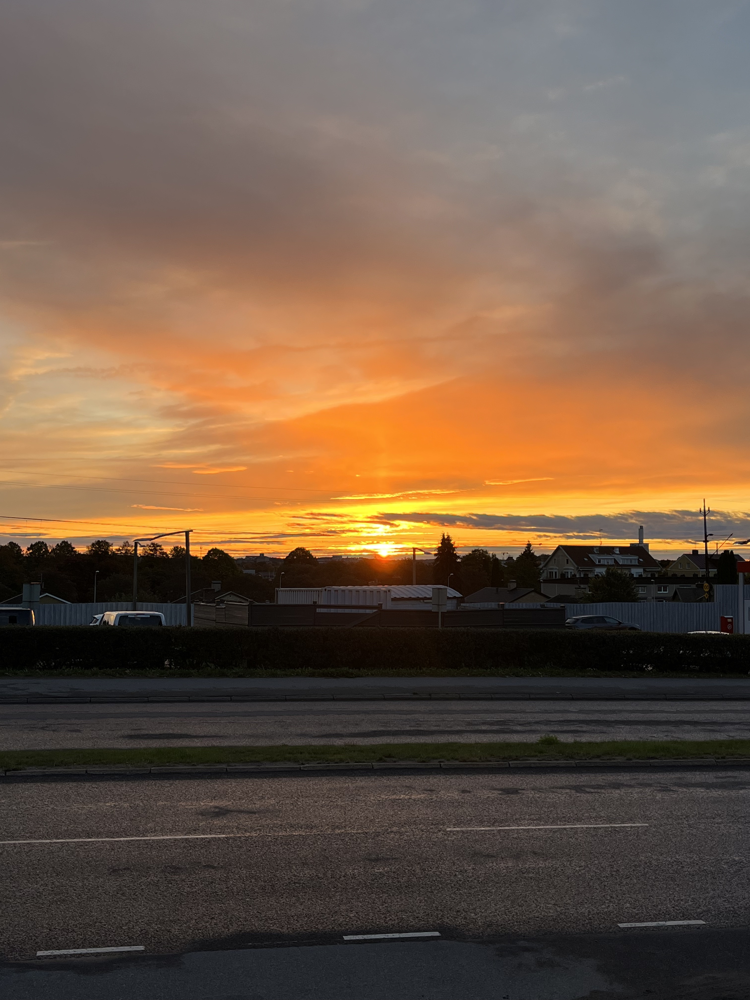
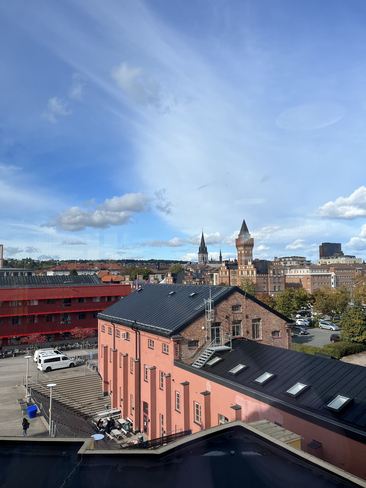
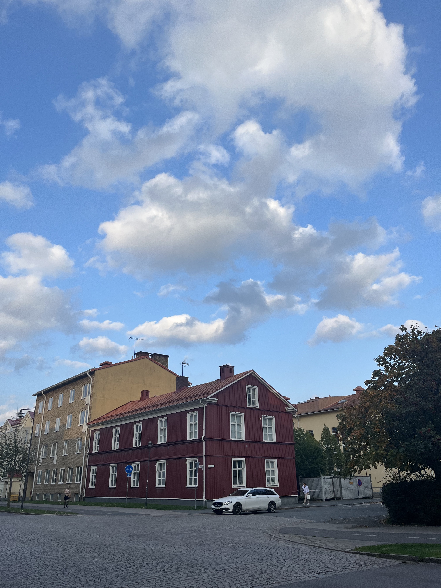
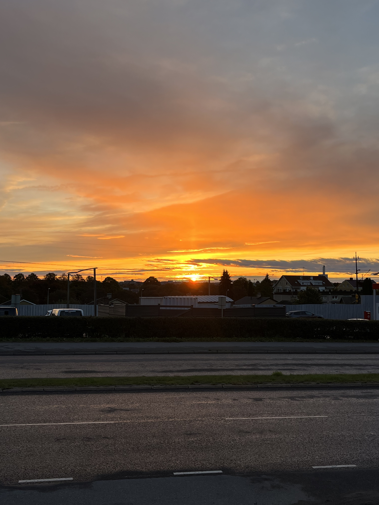
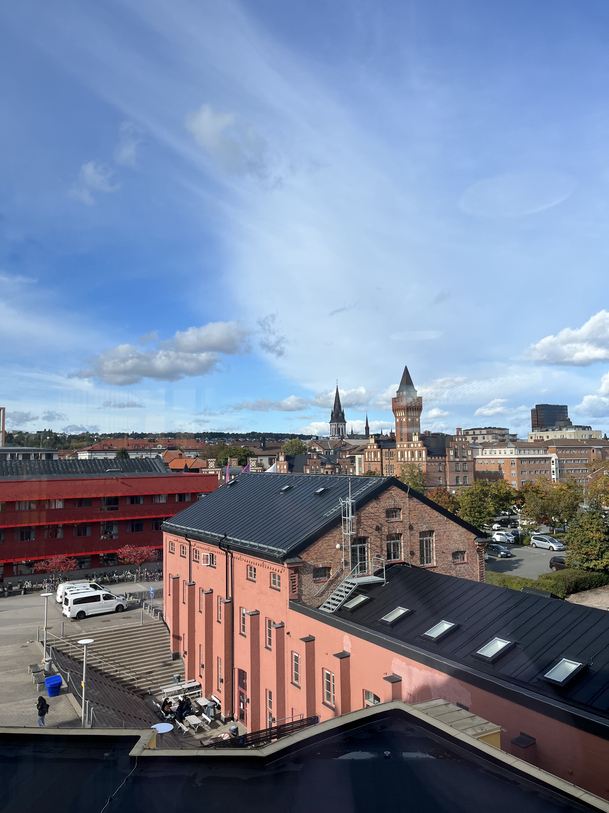
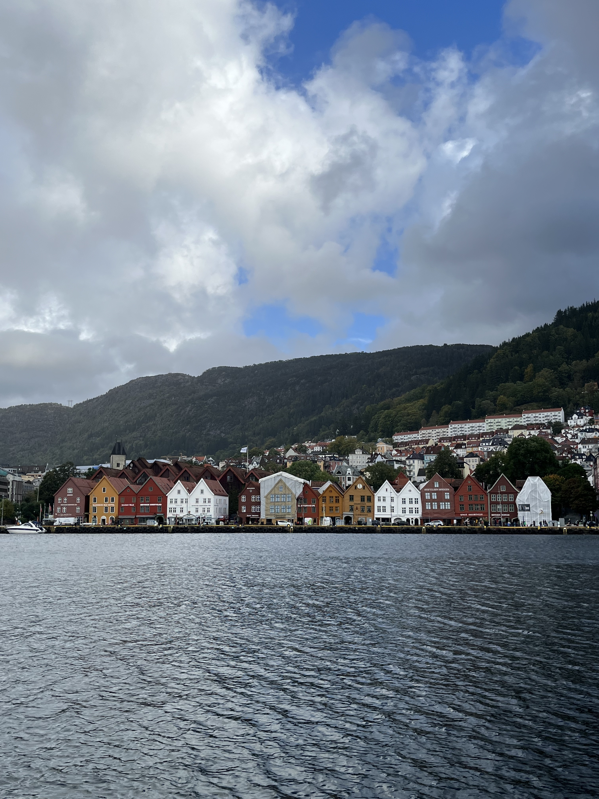
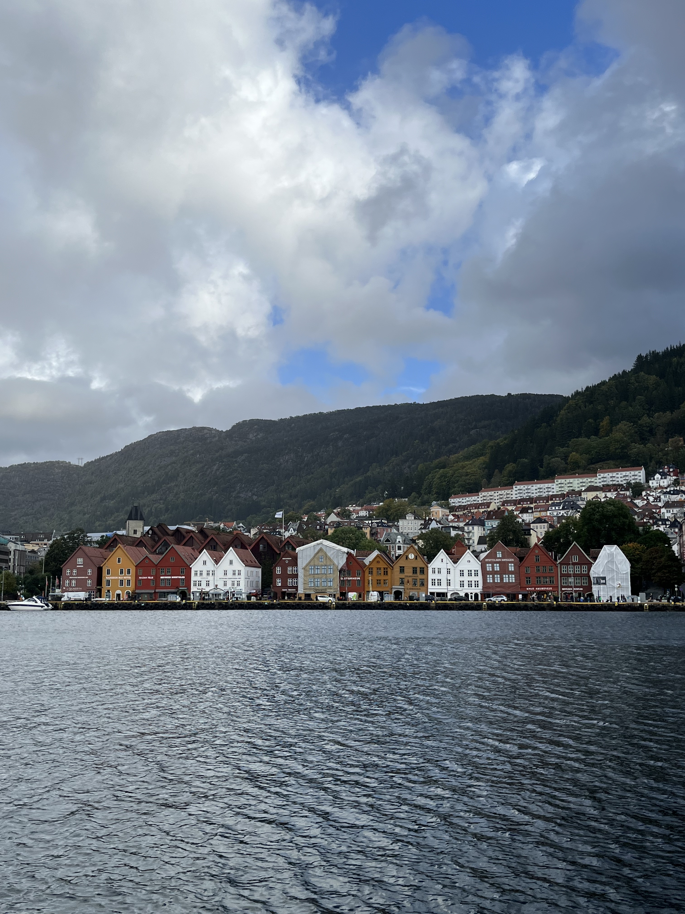

Welcome to my portfolio 👋🏼
Hello! I am Jialu as known as Ellie. Welcome to my portfolio web page. I am very happy to see you here. I am a university students learning computer science. I have a great enthusiasm in Web Design and Fintech. There are more information about me in the below. If you want to know more about my previous projects, please check my github. If you want to contact me, please check my linkedin. Thank you for your visiting. Have a nice day!


 

 





 
